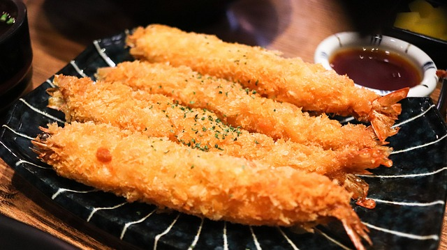
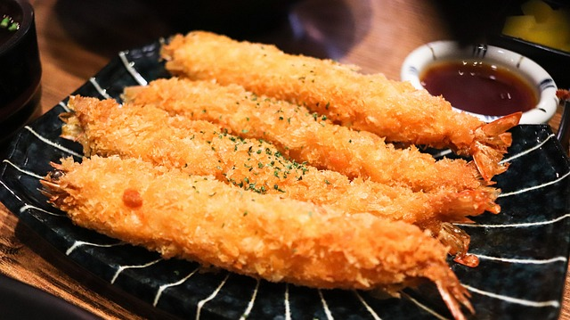

COMIDAS INTERNACIONALES
RESETA DE TEMPURA
La tempura es un plato japonés de alimentos fritos recubiertos con una masa ligera y crujiente. Aquí tienes una receta básica para preparar tempura en casa:
Ingredientes:
Camarones Calamares Pimientos Calabacines Harina de trigo Agua fría Huevo Aceite vegetal Salsa de sumiso o sal
Instrucciones:
Pela y desvena los camarones, dejando las colas intactas. Corta los calamares en anillos y los pimientos y calabacines en rodajas. En un recipiente, mezcla la harina de trigo, el agua fría y el huevo hasta obtener una masa suave. Calienta el aceite vegetal en una sartén grande. Sumerge los camarones, calamares, pimientos y calabacines en la masa de tempura. Frie los alimentos en el aceite caliente hasta que estén dorados y crujientes. Retira los alimentos fritos y colócalos sobre papel absorbente para eliminar el exceso de aceite. Sirve la tempura caliente con salsa de sumiso o sal.
Degustación visual
 
